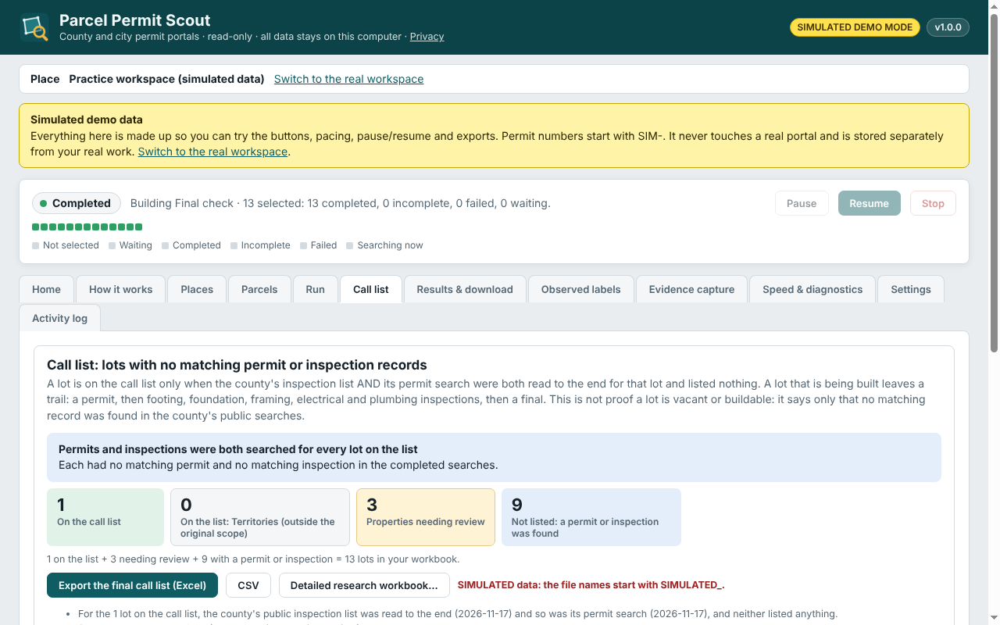
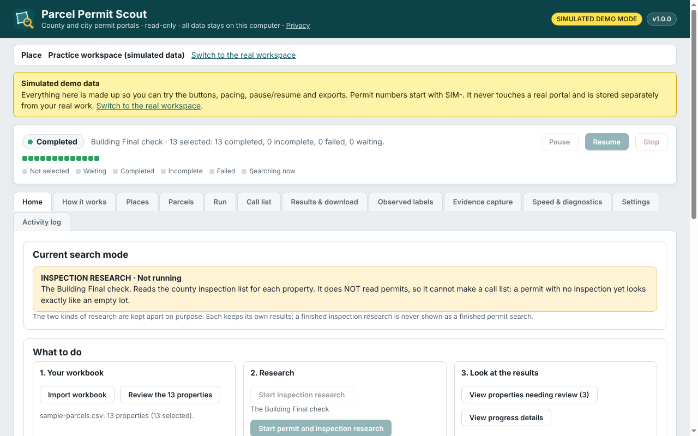
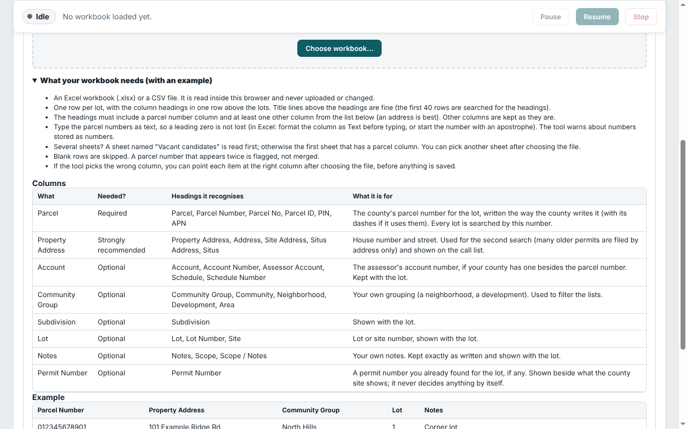
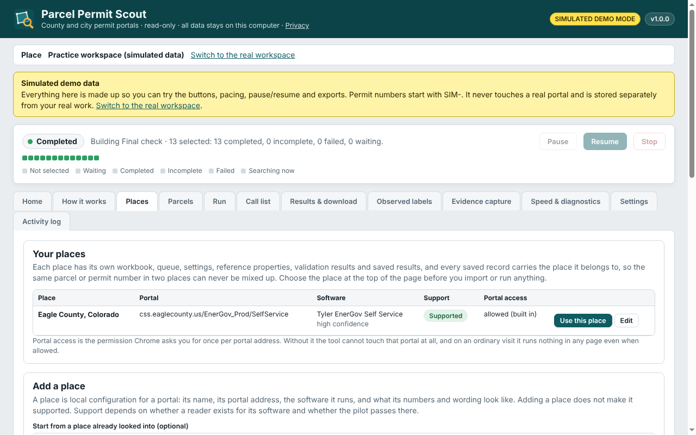

What it does
Your spreadsheet in
An Excel or CSV file with one row per lot and its parcel number. The extension shows exactly what the file needs, with an example to start from.
Every lot checked
Each lot is searched on the permit portal by parcel number and street address. It reads the permits, their pages and the public inspection list. Pause, resume or stop at any time. On websites a tool must not search (OpenGov towns), you open each lot's page and it reads that page.
A plain answer out
No permit or inspection found, something found, or needs a person to look. Download a call list and a detailed research workbook.
Made for
Builders, developers, land buyers and agents who would otherwise search a county permit site one parcel at a time.
See it




Which permit websites work
| Permit website software | Status |
|---|---|
| Tyler EnerGov Self Service (Eagle County, CO built in; others can be added) | Supported |
| Accela Citizen Access (checked on Pasco County, FL, and on Sarasota County, FL, where you sign in yourself first) | Supported (Sarasota: permits only) |
| County and city map sites (ArcGIS) that publish permits (checked on Mecklenburg County, NC) | Supported, permits only |
| CityView Portal (checked on Thornton, CO) | Supported, permits only |
| CentralSquare eTRAKiT (checked on Shoreline, WA) | Supported |
| OpenGov (checked on the Town of Vail, CO) | Read this page, permits only: you search each lot and open its page, and the tool reads that page. It never searches these sites and never answers a "verify you are human" check. |
"Supported" means the reader was run live on that very portal; every place still runs a short pilot in your browser before a batch. A new county on the same software is "Experimental" until its own pilot passes. "Permits only" means that website shows the public no inspections. Want your county? Request it here.
Read-only and private
Only reads
It searches and reads. A guard refuses anything that would apply, submit, pay or change something on a county site.
Stays on your computer
Your spreadsheet and every result stay in your browser. No account, no tracking, nothing uploaded. Privacy policy.
Your own sign-in
It works in your own browser tab. If a county site needs you to sign in, you sign in yourself; it never sees your password.
Get started
- Add Parcel Permit Scout to Chrome and open it from its toolbar icon.
- Try the practice workspace first: it uses made-up data and never touches a real site.
- Load your spreadsheet, open the county's permit site in a tab, and start with a short pilot run.
What it cannot tell you
It reports what the permit website's records show. It does not say a lot is vacant, buildable or for sale, and records filed under a different parcel number or address will not show.